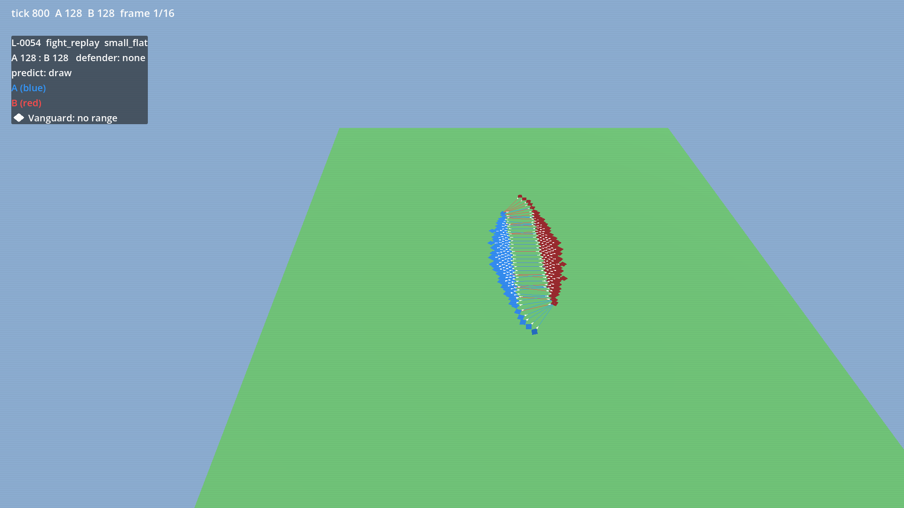
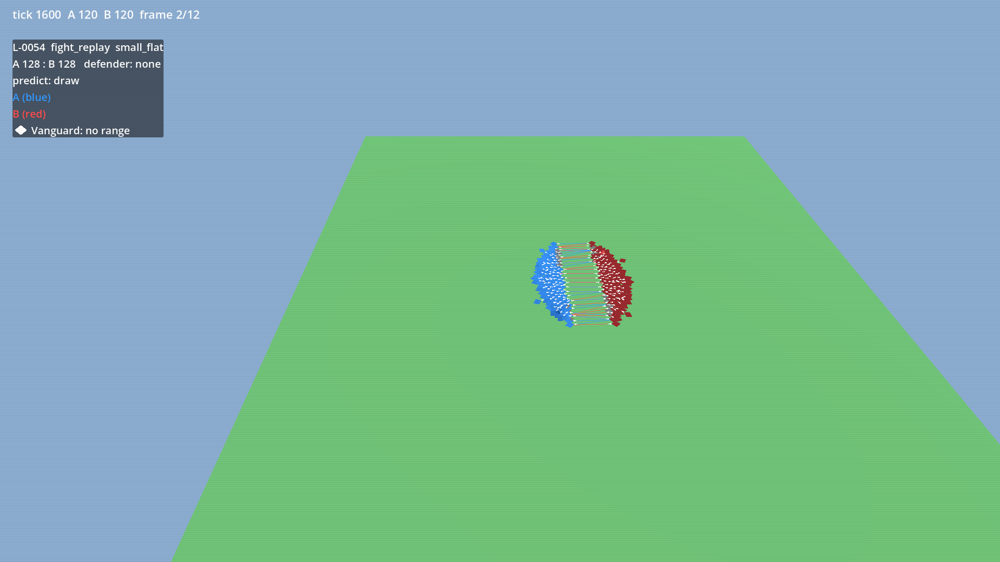
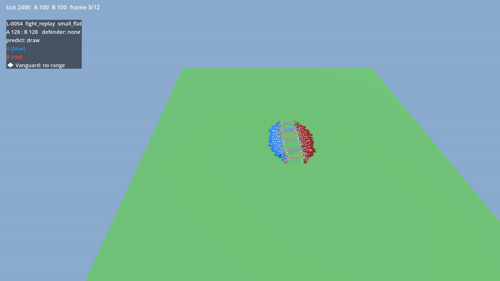
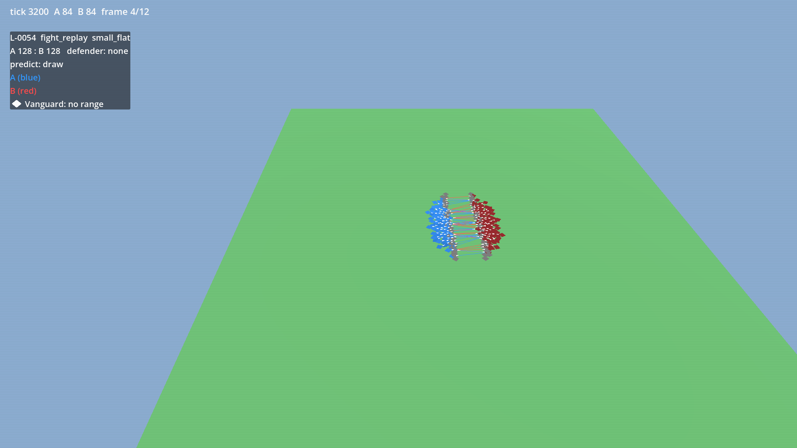
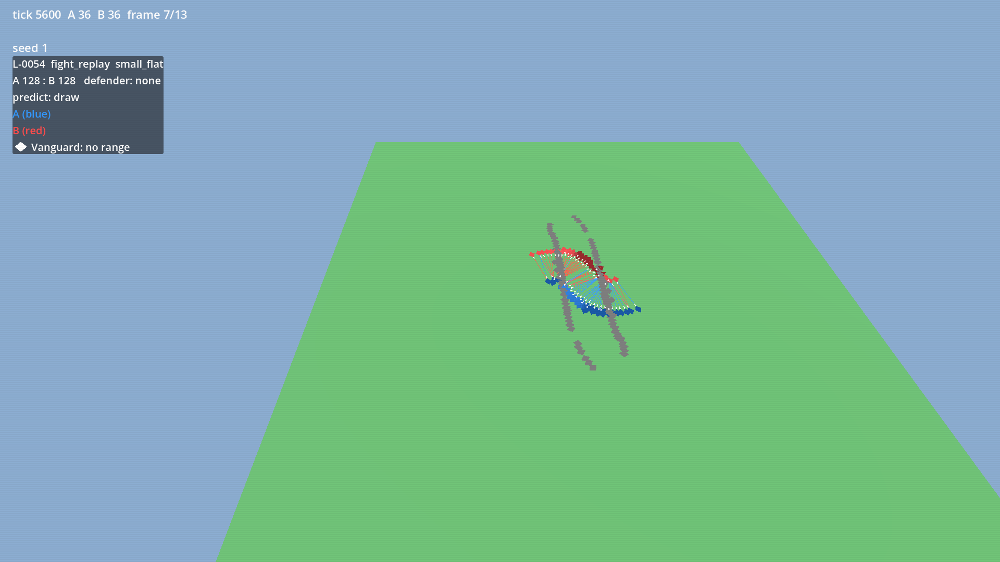
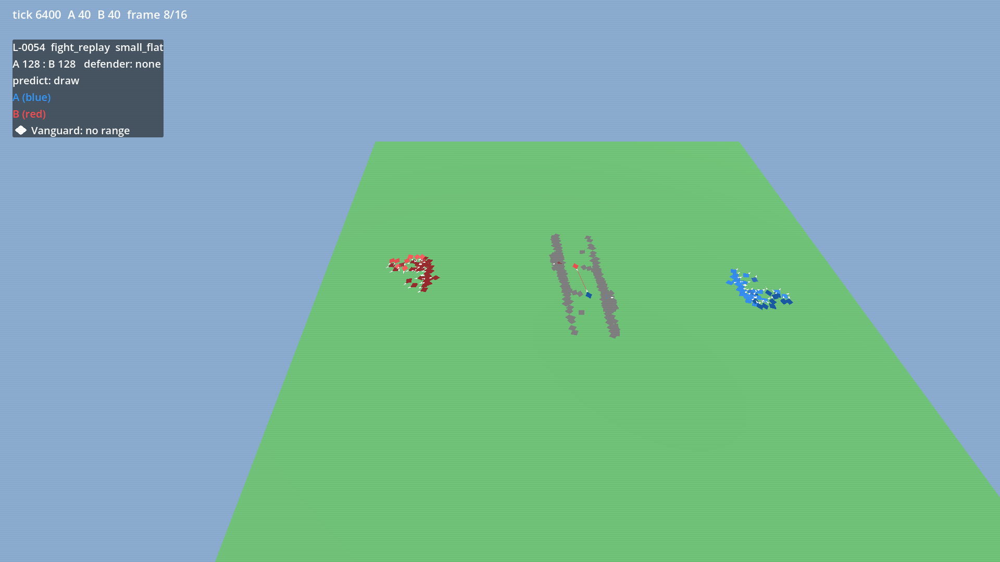

pre-scale-lock, branch s/H-040-arena-stage1, not landed
Side A blue, side B red. Answer in verdicts.md: | id | verdict | feedback | with verdict A, B, draw or deny.
L-0054: engine H-057 at 3d371e7a, not landed; pre-scale-lock; L-0054 seed 1; re-run on main after the landing for the record. Not a stall: it ends in a wipe.
Known look note: camera scale is small, the engagement fills about 10% of the frame.
L-0054 seed 1 pair: 128:128
predict: draw DRAFT (Architect to confirm): the two sides are equal in number and kind with no ground between them, so neither should win.
winner: A survivors: 9:0 ticks: 8954 end: wipe (om-fight-2)
disagree (thin margin)
engine H-057 at 3d371e7a, not landed; pre-scale-lock; L-0054 seed 1; re-run on main after the landing for the record. Approve means: the two blobs now fight to a finish and the result is plausible. Deny means: they still stand off, or the finish looks wrong for a reason you name. What to expect: the two 128-strong blobs meet at the centre, grind down evenly, then a small melee decides it; no standoff at the end.
verdict: -
tick 0 A 128 B 128

tick 800 A 128 B 128

tick 1600 A 120 B 120

tick 2400 A 94 B 94

tick 3200 A 76 B 76tick 4000 A 60 B 60tick 4800 A 47 B 47

tick 5600 A 36 B 36

tick 6400 A 27 B 24tick 7200 A 20 B 15tick 8000 A 13 B 8tick 8800 A 9 B 2tick 8954 A 9 B 0